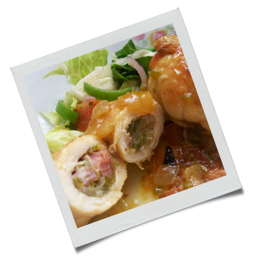

3 peitos de frango

1/2 bola de mussarela de búfala em fatias
1 cenoura
8 cogumelos paris
10 tomatinhos cereja
Algumas folhas de espinafre
Azeite, sal e pimenta-do-reino a gosto
Orégano fresco

Corte o frango ao meio no sentido horizontal para dividi-lo em dois, mas deixando o final ainda intacto;
Tempere o interior e o exterior do frango com um pouquinho de sal e pimenta, e em seguida coloque algumas fatias de espinafre cru e queijo no meio;
Corte os legumes da forma que mais gostar e coloque-os no fundo da forma e tempere com sal, azeite e pimenta;
Coloque os frangos sobre os legumes, jogue um fio de azeite sobre eles e algumas folhas de orégano fresco;
Leve ao forno preaquecido à 180º C por cerca de 25 a 30 minutos ou até que os peitos estejam dourados por cima.